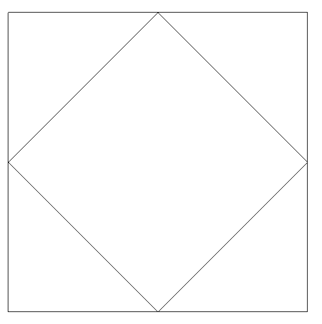
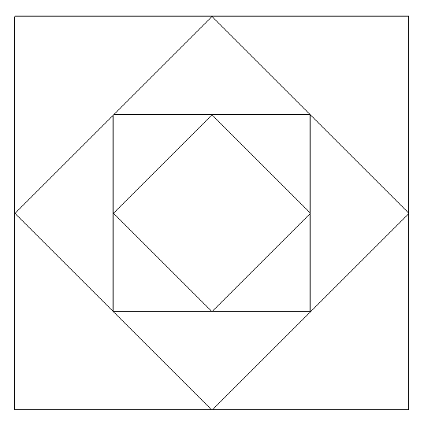
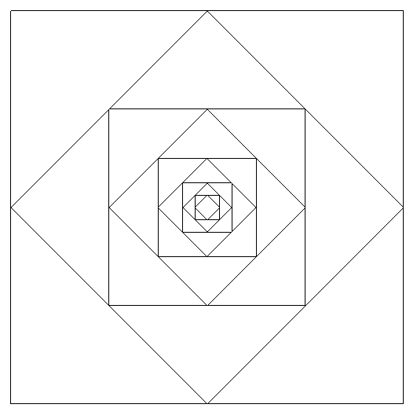

Varios cuadrados encajados
Definir la función
cuadrados :: Int -> Picture
tal que (cuadrados n) dibuje n cuadrados encajados como se muestra en las siguientes figuras:
- para n=2

- para n=4

- para n=10

Nota: Escribir las soluciones usando la siguiente plantilla
import Graphics.Gloss import System.IO main :: IO () main = do hSetBuffering stdout NoBuffering putStr "Introduce el numero de cuadrados [1..10]: " n <- readLn display (InWindow (show n ++ " cuadrados encajados" ) (600,600) (20,20)) white (cuadrados n) cuadrados :: Int -> Picture cuadrados n = undefined
Soluciones
import Graphics.Gloss import System.IO main :: IO () main = do hSetBuffering stdout NoBuffering putStr "Introduce el numero de cuadrados [1..10]: " n <- readLn display (InWindow (show n ++ " cuadrados encajados" ) (600,600) (20,20)) white (cuadrados n) -- 1ª solución (por comprensión): cuadrados :: Int -> Picture cuadrados n = pictures [scale (r^n) (r^n) $ rotate (g n) $ cuadrado | n <- [0..n-1]] where cuadrado = rectangleWire 500 500 g n | even n = 0 | otherwise = 45 r = 1 / sqrt 2 -- 2ª solución (por recursión): cuadrados2 :: Int -> Picture cuadrados2 1 = rectangleWire 500 500 cuadrados2 n = pictures [rectangleWire 500 500, rotate 45 $ scale (1/sqrt 2) (1/sqrt 2) (cuadrados2 (n-1))]